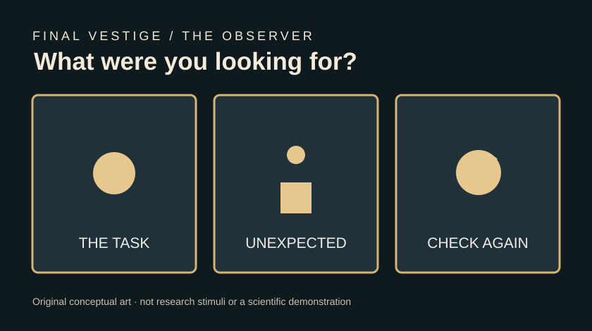

Final Vestige Studios · Mind & Perception · Zen12 Premium
A short listening routine is a format, not a promise.
Is Zen12 Premium worth considering if you want a regular meditation-audio routine? Here is what the seller says you get, what independent attention research does not prove, and what you can try free before paying.
Research-led product guide · Not an endorsement or hands-on product review · No active purchase link
Optional 42-second film — original treatment only
This is the non-playable film concept for the hybrid experiment. There is no video file, forced playback or substitute for the written guide.

Read the full 42-second narration transcript
“A radiologist studies an image, searching for a tiny detail. The researchers have added something enormous. Most do not report it. It is tempting to say that attention can be switched on with a product. But this experiment did not test a meditation recording. It showed the limits of a particular search task. Zen12 is a paid audio library, not a scientific answer to this experiment. Before buying, ask what the package really includes, what the final price is, and what evidence supports the claim. You can try a free twelve-minute routine first.”
Production concept: six caption intervals in R384_FILM_CAPTIONS.vtt. Rights-cleared original animation required before any playable version. Target runtime 00:42.0, no autoplay, controls if/when a tested file exists, no external embed or analytics.
The gorilla you were not asked to see
A 2013 study asked radiologists to search for possible nodules in medical scans. Researchers inserted a much larger gorilla shape into one scan. Twenty of twenty-four failed to report it; afterward, all twenty-four recognized it when shown the relevant image explicitly. This was an experimental search task, not a clinical missed-diagnosis rate. Read the original paper.
Why begin a meditation-audio buyer guide there? Not to suggest that Zen12 prevents inattentional blindness. The experiment illustrates how easily a persuasive story can outrun a narrow finding. A paid audio product deserves an independent decision, not a sales conclusion borrowed from an unrelated study.
See the related published change-blindness investigation. The distinction: change blindness concerns changes across views; inattentional blindness concerns an unexpected event during an allocated task.
What Premium appears to include
Product format — seller descriptions
Inspire3's Zen12 public page lists twelve levels, forty-eight MP3 recordings, a quick-start guide, a user manual, level audio guides, support and bonuses for its Premium tier. It describes twelve-minute listening sessions. These are package descriptions from the seller, not independent confirmation that any particular purchaser receives every item.
Seller pricing & returns — verification needed
On November 14, 2026, the public Premium price display showed $87.99, with a higher crossed-out comparison price. Other publicly captured snapshots differ. The page advertises a one-year money-back guarantee. We have not checked an authorized referred checkout, taxes, possible upsells, fulfillment, or real refund execution. Treat all displayed terms as provisional until verified at checkout.
Source: public Zen12 Premium offer page (zen12.com, accessed 14 November 2026). Merchant links and earning URLs are intentionally withheld pending partner verification; the research link above is independent scientific literature.
What has—and hasn't—been demonstrated
The 1999 basketball-task research and 2013 radiologist study concern inattentional blindness. They do not test Zen12, a specific soundtrack, a brainwave-entrainment protocol, relief of anxiety, or improvement in focus. The existence of research on meditation does not, by itself, validate the advertised equivalence of a twelve-minute session to an hour of advanced practice.
A better buying question is not “does the invisible gorilla prove I need this?” but “do the recordings, format and terms match how I intend to use them?”
Try a useful twelve-minute routine without paying
- Two minutes: write one nonclinical task you keep postponing and choose a start you can finish quickly.
- Six minutes: work on just that start, or sit quietly with an ordinary timer if you simply want a pause. You do not need a special audio file.
- Two minutes: record what interrupted you, without judging your result.
- Two minutes: write whether the format felt workable and whether you prefer spoken guidance, silence, or music next time.
This is an original reflection, not a controlled test or a therapeutic intervention. It cannot measure brainwaves, diagnose attention issues or predict product efficacy. If this sort of routine works for your schedule, decide whether a structured audio library adds anything you value.
Get the existing free Focus Fieldbook
52-page edition via the existing Final Vestige Dispatch/Jetpack subscription; no second list or separate signup on this page. You may read this product guide without subscribing.
Five questions before any payment
1 · Which package?
Beginner, Premium and Advanced are listed separately. Confirm the named tier, tracks and level counts at the actual checkout. A general catalog cannot prove what a referral offer includes.
2 · What equipment?
Ask the seller whether the precise audio format requires headphones, a specific player or connectivity. Do not assume that a file works offline until the actual delivery terms confirm it.
3 · What can I expect?
A well-produced library may be convenient. It is not automatically an independently demonstrated treatment or performance enhancer. Look for studies of the actual sold program and relevant measured outcomes.
4 · Can I reverse my decision?
Read the current refund procedure, deadlines, exclusions and contact method. A displayed guarantee is a seller statement; whether it is honored in a specific case cannot be inferred from that statement.
5 · What am I paying?
Verify currency, taxes, bundles, optional order bumps and final total before confirming. Our November public-page snapshot does not authenticate an affiliate checkout price.
Or do I need it at all?
If an ordinary timer or free guided resources meet the same purpose, there is no evidence-led reason to buy merely because the session is twelve minutes long.
The decision, without a sales illusion
Who might reasonably investigate this: someone seeking a structured downloadable audio library who values an organized multi-level listening format and has reviewed the exact seller terms. Who should skip or defer: anyone expecting guaranteed stress treatment, cognitive enhancement, medical effects, or the benefits of a specific amount of meditation from a short recording.
Final Vestige has not independently used or efficacy-tested the recordings. We will not recommend a purchase until we can verify the named publisher's Inspire3 permission, permitted channels, exact earning URL and relevant product terms.
This is a truly disabled control. It does not open a merchant, collect email, launch checkout or record an affiliate click.